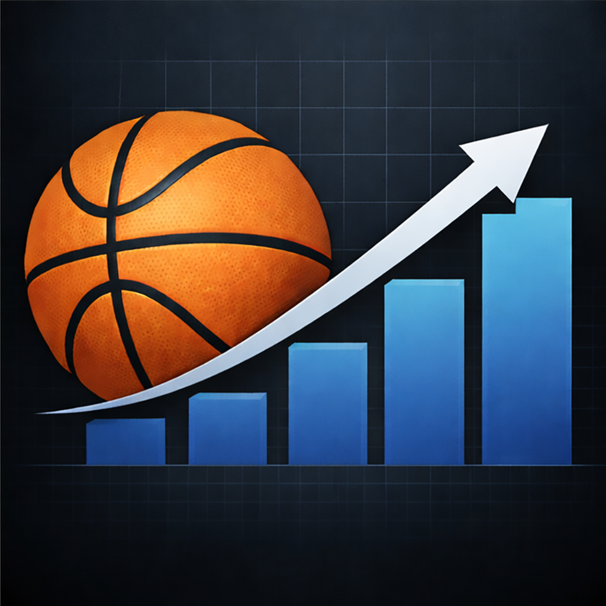
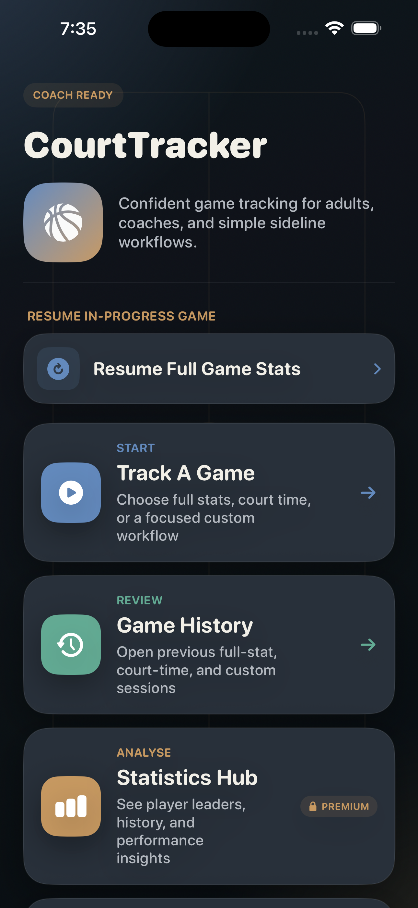

Questions, bug reports, or feature requests — we read every email.

Typical response time: 1–2 business days
No. Court Tracker works entirely offline — game tracking, rosters, stats, and history all live on your device. Nothing is uploaded anywhere.
Track Court Time mode — court time, rotations, and substitution tracking — is free forever. The one-time $1.99 unlock adds live scoring, full box-score stat tracking, custom stat tracking, the Statistics Hub, and CSV export. No subscription.
Open Settings inside the app and tap "Restore Purchase." This re-checks your Apple Account for a previous purchase and unlocks premium features automatically — no new charge.
Yes — since everything is stored only on your device for privacy, uninstalling Court Tracker removes team rosters, game history, and stats along with it. Use the CSV export feature to back up game data beforehand if you'd like a copy.
Yes, Court Tracker is a universal app and includes a layout specifically optimised for iPad — larger controls and wider spacing designed for sideline and table use. You can switch between iPhone and iPad-optimised layouts anytime in Settings.
Email us at the address above with your device model, iOS version, and a quick description of what happened. Screenshots help a lot if you have them.